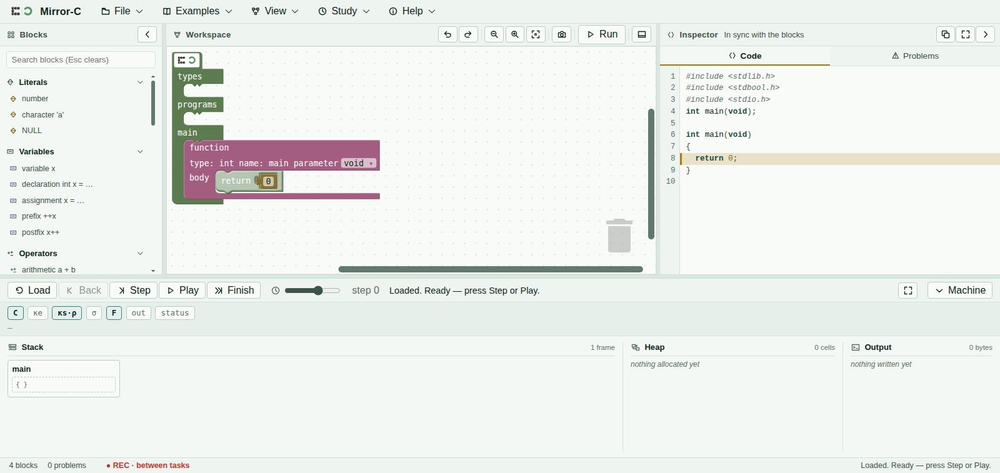

What is being recorded, and what is not
If someone has asked you to take part in a research session with Mirror-C, the software keeps a record of what you do. This page says exactly what that record contains. You were told this in person and on the consent form; this is the same thing, written down, so you can check it rather than take it on trust.
Ordinary use of Mirror-C records nothing at all. There is no analytics, no telemetry, and no network connection of any kind — the software does not know how to make one.
The REC indicator
While a session is recording, the status bar at the bottom of the window shows a ● REC marker. Hovering it shows this sentence, which is the whole promise in one line:
Recording: block edits and one line per machine step. Never your program text, its output, any field value, your name, or the time of day. Local to this browser until you export it yourself.
If the marker is not there, nothing is being recorded. If it says Recording STOPPED, something went wrong and the session should be paused — tell whoever is running it.

What is recorded
- Block edits. That a block was created, moved, deleted, or that one of its fields was changed — the kind of block and where it went. Not what you typed into it.
- One line per machine step. Which control you pressed, which rule the machine applied, how many frames and cells and pointers existed at that moment, and how many bytes had been printed.
- Your answers to the multiple-choice questions, recorded as which option number you chose, and which attempt it was.
- When each task started and ended, measured in seconds from the beginning of the session.
- A short random session code so the file can be told apart from another one. It is random. It is not derived from anything about you.
What cannot be recorded
This list is not a filter applied to a bigger record. The record has nowhere to put these things — the software would have to be rewritten to hold them:
- The text of your program. Only a short checksum, which is enough to notice that you went back to something you had before, and not enough to reconstruct anything.
- What your program printed. Only how many bytes, and a checksum.
- Anything you type into a field — a number, a variable name, a format string. The record notes that a field changed, never which one or to what.
- Your name, your username, your computer's name, your language, your screen size.
- The time of day, or the date beyond the month. All timings are measured from the start of the session, so the file cannot say when you sat down.
Two extra items — snapshots of your program at the start and end of a task, and a free-text answer — are recorded only if you agreed to them separately on the consent form. They are off unless you said yes, and the session runs perfectly well without either.
Where it is kept
In this browser, on this computer, and nowhere else. Mirror-C makes no network requests. Nothing leaves the machine until you press Export yourself, which saves a file to your downloads folder and hands it to the researcher.
Reading it, exporting it, deleting it
At the end of the session a review panel opens. It shows a summary and the complete record. It is meant to be read, and you should take as long over it as you want — this is the point at which the sentence on the REC marker becomes something you can check rather than believe.
- Read it. The raw record is there in full, not just a summary of it.
- Export it. You press the button, not the researcher. Until you do, the file does not exist.
- Delete it, if you want to. Delete all study data removes everything, and it takes two clicks so that it cannot happen by accident. It is final and there is no copy. Withdrawing is a normal thing to do and you do not have to give a reason.
The task band
During a task, a strip appears under the toolbar with what you have been asked to do, and for some tasks a multiple-choice question. Pressing Submit says “Answer recorded” and nothing more — it will not tell you whether you were right, and that is deliberate rather than an oversight. Everything will be explained at the end.
Some menu items are switched off while a task is open. That is only to keep every session the same; nothing is being hidden from you personally, and they come back between tasks.
Questions
Ask the person running the session. If it is a question about what the machine picture means, they will ask you to hold it until the end — not to be unhelpful, but because answering it mid-task would change what the session measures. They will answer everything afterwards.
You may stop at any point, without giving a reason, and without it affecting anything else.